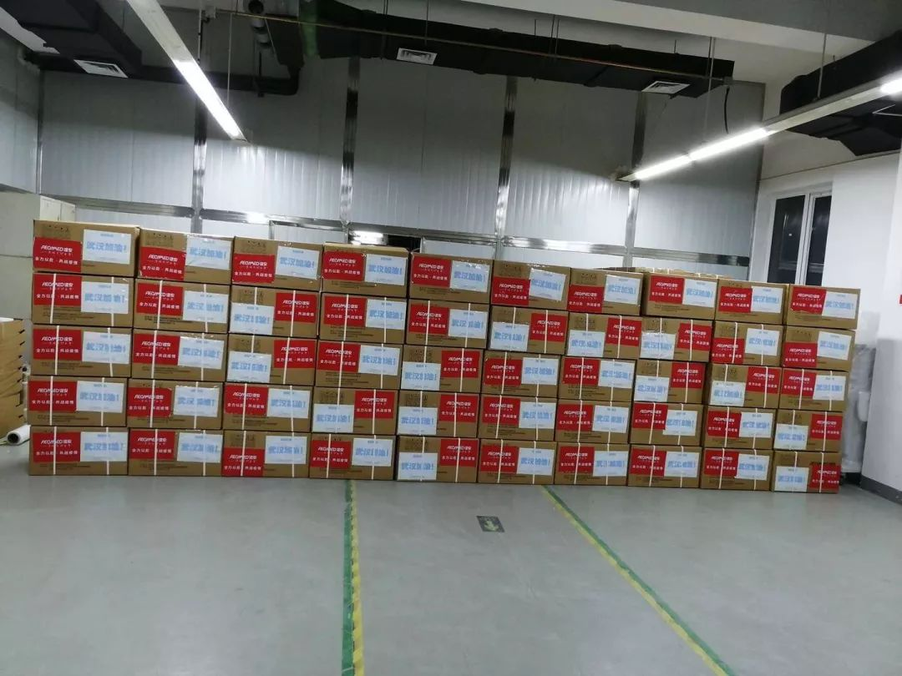

岂曰无衣，与子同裳，“日本诗词大会”背后的中国人
原文链接 备份链接 *************▲*************贴着“岂曰无衣，与子同裳”的物资送达武汉当地医院。（日本湖北商会供图/图） 全文共3277字，阅读大约需要8分钟。 外交部发言人华春莹在例行记者会上说，病毒无情 …
澎湃新闻记者 李思文 实习生 薛晓咚
2月13日，民间志愿者自发组成的“亲橙孝感”团队，又落实了待捐赠的100套防护服、50000个N95口罩、2.6吨大米、5吨酒精以及14台单价10万元的吸氧机，准备送往疫区一线。
这支除夕夜临时组建的团队，在大年初一就筹措了700多箱医用消毒液、5000支N95口罩。一周内，发往孝感100多吨消毒水、20多万双手套、10多万只口罩、2万多件手术防护衣、上千件PCS防护服及护目镜。
“我们拼的是聚焦、是速度。不在多，在靠谱！”志愿团队核心组织人之一毛丹红说，作为民间志愿者，一腔热血之外更要专业高效，为了保障高效运转，团队将150名志愿者按照基金、采购、物流、公函、回执等小组进行划分，用“项目化”的思维对待每一份物资。
除夕夜发红包找队友，年初一落实5000只口罩
1月24日除夕夜，在杭州阿里巴巴工作的孝感人字玉接到了老同学文胜的电话，“老家物资紧缺，你能不能搞到一些防护用品？”一通简单的电话，让字玉意识到老家孝感情况已经危急。
文胜是湖北省人大代表，同时也是湖北工程学院教授，他告诉澎湃新闻，在武汉“封城”的第二天，大量物资和医院都涌向了武汉，但武汉周边高风险的城市面临着“灯下黑”的情况。“当时孝感还没传出大量病例，但整个湖北的确诊人数都在不断攀升，一旦孝感感染数量激增，普通市民和医护人员都要暴露在高风险之中。”
文胜原本计划找化工厂的同行筹措消毒水，但春节期间认识的厂商和企业都已放假，这更加深了他的担忧。为了找到更多的物资，文胜几乎问遍了所有认识的同行和朋友，字玉就是其中之一。
当时字玉的工作群内正好在发拜年红包，挂了电话后，他也跟着发了一个红包，配文是：湖北孝感疫情严重，急寻医疗防疫物资！当地有公务人员接应，可直接对接到一线！
“一开始我就是想发个红包看看谁手上有物资可以对接，没想到当天晚上就聚集起来三四十个志愿者。”字玉说，在发出这条消息后，瞬间有十几名同事私信询问，大多数都是湖北老乡。
其中毛丹红响应最为主动，她率先建立起了一个志愿者群，开始组建志愿团队。她回忆称，“当时我发了一条求助朋友圈，一位餐饮企业家在凌晨看到我的求助信息后，当即联系上了一家消毒水厂家，敲定了第一批物资的捐献事宜。当两个确定性物资要对接时，我就把需求方都拉到了一起，孝感文老师也加了群，我们的志愿者工作也就这么开启了。”
24小时内，在字玉和毛丹红的组织下，迅速形成了一支跨多个业务部门，完全自发的“亲橙孝感”民间志愿者团队。
大年初一，这支三四十人的志愿者团队，已经筹措了700多箱医用消毒液、5000只N95口罩。两天后，60吨由安徽金禾捐赠的双氧水送达孝感市孝南区疫情指挥部。在短短一周内，100多吨消毒水、20多万双手套、10多万支口罩、2万多手术防护衣、上千件PCS防护服及护目镜，直抵孝感一线。
“27号到的第一批消毒水立刻用在了孝感防控指挥中心、警务、哨卡等一线。”文胜说，这批消毒水帮前线支撑了十几天，解决了燃眉之急。

物资群内每天都传出“好消息”。 本文图片均为受访者供图
分小组监控物资，“项目化”运作
庞大的物资链如何运作？在这个团队里，以字玉、毛丹红为核心的志愿者们负责筹备、管理、运输物资，在湖北的文胜则负责在当地进行物资对接。字玉介绍称，志愿者团队内分为基金、采购、物流、公函、回执等小组，“我们就把物资线索当做一个项目去追踪和管理”。
“有一个物资线索，我们就会拉一个小群，然后会有一个志愿者在这个群里专门盯着这个物资，进行发货、物流的追踪。”字玉说，在联系的时候很多物流称能发货，但下面的营业点是什么状态，都是不确定的，每一单都需要志愿者去追踪，一旦出现问题迅速协调。
但在实施的过程中，他们还是遇到了层层难以想象的阻碍。毛丹红说，物资甄别的准确性、资金采买的及时性、物流的通畅性，都是民间志愿者团队在援助疫区时常常面对的困难。
在筹措资金的过程中，首先面临的困难就是“找钱”。
“我们26号对接的几笔物资，商家都不接受先发货，一个时间差物资瞬间就被抢走了。”毛丹红说，在最初成立团队时，因为资金不到位，他们已经错失了几笔物资。
当时几十名志愿者们随即自发进行捐款，筹集了约10万元的公益基金，但在巨大的物资消耗面前，10万元只是杯水车薪。
“我们自己没什么钱去买那么多的物资，就只能到处找。”字玉说，为了解决资金难题，“亲橙孝感”团队专门设置了基金组，负责对接基金会，很快便与华中科技大学校友会、北京新阳光慈善基金、爱德基金会等20余家社会爱心机构及企业进行联动。
基金组的志愿者们在明确一些基金的要求后，将筹集的资金交给采购组进行购买口罩、消毒水、防护服等紧缺物资。物资到位后，再由物流组一个个拨打不同快递、物流公司的电话，询问是否能发货、何时能送达。由于疫情紧张，各地交通管控严格，志愿者们还需要划分出专门的组别来落实政府公函，并在疫区收到物资后给爱心机构及企业发送回执。

“亲橙孝感”团队筹集的物资
毛丹红说，虽然大部分志愿者都不在一线，但团队中的核心成员几乎每天十几小时都在马不停蹄地对接货源、基金、物流和地方政府。“我基本上是手机不离手，因为我打字比较快，三四天之后我的小手指就抽筋了，只能发语音。但语音文字翻译出来总会有一些错别字，后来手指好一点了，就又开始打字。”
到了后期，志愿者小组出现了更加细致的分工：不同的志愿者分别跟进不同的物资，当群内人数达到130人后，志愿者群开启了邀约制，从而保证团队的人员可控，提高甄别物资资质的效率与准确性。
截至2月13日，志愿者群里已经有150人。这些志愿者们来自全国各地，甚至还有越南的志愿者，他们在群里备注为“志愿者1号、2号……”很多人彼此之间并不认识，但因为帮扶孝感而成为了最亲密的队友。
快递发货物流难通，因成本高弃直升机

2月13日筹集的呼吸机正在检查包装，准备发往抗疫一线。
在武汉“封城”、多地交通受阻的情况下，运输问题成为了最大的难题。
毛丹红说，曾有一位背着5箱口罩的越南爱心人士被卡在了海关处，得知消息后，文胜火速开车赶往指挥中心申请捐赠函，请越南海关予以放行。但爱心人士在抵达广西后，在广西关口联系多个快递公司都没能将物资直邮湖北，打车前往市中心也面临同样的问题。最后志愿者们商量出了迂回邮寄的方法，先将物资寄往广州，再由广州的志愿者联系快递公司，将5箱口罩寄往孝感。
字玉告诉澎湃新闻：“这次疫情又赶上过年，物流状态复杂，比如顺丰，有些地方能发，有些地方就不能发，有时候德邦说能发，但打电话过去又说不能，我们每一批物资都要挨个确认，不仅要确认发货，还要确认运输过程中各个站点的状态正常。”
为了保障物资尽快抵达疫区，除了物流和快递，团队有时还要对接航空部门，“有些物资需要转运，就要飞到长沙的黄花机场，再从黄花机场找顺丰往疫区里面寄。”字玉说，有一次为了运输医用酒精，团队还沟通过直升飞机，后来发现成本太高后改换为槽运车。
来自阿里菜鸟部门的志愿者孟白说，整个过程大家都是在“摸着石头过河”，“最初我们经验不够，拿到几十箱消毒水就着急发货，但实际上货散、货少的情况下更不能及时发车。”孟白说，在后续发货时，都会将零散物资都尽量集中到一处，统一安排发货。
“像有一次我们给孝感发货，车已经找到了，但货不够，我们就要继续联系基金会和厂商抢货，要凑满17.1吨，最后连夜凑货发货车，在初四晚上7：40分时候送到了孝感指挥中心。”孟白说，在这个过程中，自己的角色由公益组织捐助方变成了物流方，又变成了寻找货源方，接着变成了采购撮合中介，最终成为了全链条服务调度指挥者。
但在运输整个过程中，也有让志愿者们特别感动的一面。毛丹红说，1月29日志愿者曾安排物资车辆前往武汉，运输900箱84消毒水，“武汉的一家派出所通过我们采买了20箱，他们来拿走那20箱消毒水的同时，还派车帮我们把剩下的消毒水分发给各家医院，我们还挺感动的。”
尽管每一批物资都要经过多方协调，但“亲橙孝感”志愿者团队的物资最终都对接到了湖北、重庆、福建、浙江等省份，为一线抗疫发挥了重大作用。
毛丹红说：“现在还是有很多人找到我们，无论是需求方、物资方还是基金会，都让我们来帮助协调。我们大部分志愿者已经复工了，都是利用自己晚上的时间在落地这些工作。因此我还是希望呼吁社会人士多多关注、支持湖北。”
戳这里进入
“全国新型冠状病毒感染病例实时地图”↓↓↓

本期编辑 周玉华
推荐阅读


原文链接 备份链接 *************▲*************贴着“岂曰无衣，与子同裳”的物资送达武汉当地医院。（日本湖北商会供图/图） 全文共3277字，阅读大约需要8分钟。 外交部发言人华春莹在例行记者会上说，病毒无情 …
原文链接 备份链接 _ 在新冠肺炎疫情中心区域，远比平时忙碌的快递员在街头难见其他人，遇到别家公司的快递员，大家叫不上名字，但都打个招呼，在特殊的时点里惺惺相惜 _ 文 |《财经》记者 俞琴 编辑 | 鲁伟 新冠肺炎疫情在武汉蔓延后，整座 …
原文链接 备份链接 2020年1月22日，一个叫A2N的互联网志愿者群体发布了一份长达4000多字的辟谣文稿，当时，街上的人大多还没有戴起口罩，有人在慌乱中买回成堆的板蓝根，还有人相信喝酒、抽烟能够抵御病毒……两天后，这份辟谣文稿的阅览量 …
原文链接 备份链接 个体救援，也是新冠肺炎疫情的重要救援力量，从农民工到退伍军人，他们以杯水尝试灭熄瘟疫之火，很多人甚至都没有留下姓名。大年初五，私家车主雷鹏驾车16小时急行1100公里，直抵武汉，成为了一名救援志愿者。 这是真实故事计 …
原文链接 备份链接 经济观察网 记者 黄蕾 孝感报道 2月10日，湖北省孝感市宣布“封城”的第17天，当地确诊病例累计2541例，成为除武汉市之外的湖北疫情重灾区。 在市民们响应政府号召待在家中的时候，有一批“逆行者”自1月25日既孝感封 …